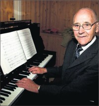

Petra Alberta Jakobsdatter
K, #51502, f. 2 mars 1868, d. 3 februar 1933
Foreldre
Biografi
Petra Alberta Jakobsdatter ble født den 2 mars 1868 på/i Storenget, Sandnesenget; Sandnes, Nærøy, Nord-Trøndelag. Hun giftet seg med
Ole Augustinius Isaksen Hoddevik. Hun døde den 3 februar 1933 på/i Nærøy, Nord-Trøndelag.
| Sist redigert |
28 april 2009 00:00:00 |
| Slektskap | 3-menning 2 ganger forskjøvet til Håkon Wahl |
Ole Augustinius Isaksen Hoddevik
M, #51503, f. 10 desember 1864, d. 27 mars 1918
Foreldre
Biografi
Ole Augustinius Isaksen Hoddevik ble født den 10 desember 1864 på/i Seløy, Selje, Sogn og Fjordane. Han giftet seg med
Petra Alberta Jakobsdatter. Han døde den 27 mars 1918 på/i Nærøy, Nord-Trøndelag. Han ble gravlagt på/i Lundring kirkegård, Nærøy, Nord-Trøndelag.
Ole Augustinius Isaksen Hoddevik kjøpte i juni 1907 Fikkan 24/4, Skillingstad, Nærøy, Nord-Trøndelag.
| Sist redigert |
28 april 2009 00:00:00 |
Isak Paulsen
M, #51504, f. før 1843
Biografi
Isak Paulsen ble født før 1843.
Isak Paulsen was also known as Isak Hoddevik.
| Sist redigert |
25 september 2008 00:00:00 |
Jette Kristine Jakobsdatter
K, #51505, f. 31 oktober 1869
Foreldre
Biografi
Jette Kristine Jakobsdatter ble født den 31 oktober 1869 på/i Storenget, Sandnesenget; Sandnes, Nærøy, Nord-Trøndelag. Hun giftet seg med
Eivind Sjøberg.
Jette Kristine Jakobsdatter was also known as Jette Kristine Sjøberg. Hun emigrerte til Canada i 1911 sammen med
Eivind Sjøberg.
| Sist redigert |
25 september 2008 00:00:00 |
| Slektskap | 3-menning 2 ganger forskjøvet til Håkon Wahl |
Eivind Sjøberg
M, #51506, f. omtrent 1869
Biografi
| Sist redigert |
21 mai 2023 11:02:30 |
Elisabeth Julianne Jakobsdatter
K, #51507, f. 25 november 1871, d. 9 april 1902
Foreldre
Biografi
Elisabeth Julianne Jakobsdatter ble født den 25 november 1871 på/i Storenget, Sandnesenget; Sandnes, Nærøy, Nord-Trøndelag. Hun døde den 9 april 1902 på/i Sandnes, Nærøy, Nord-Trøndelag.
| Sist redigert |
25 september 2008 00:00:00 |
| Slektskap | 3-menning 2 ganger forskjøvet til Håkon Wahl |
Alette Oldine Jakobsdatter
K, #51508, f. 6 juli 1874, d. 27 februar 1922
Foreldre
Biografi
Alette Oldine Jakobsdatter ble født den 6 juli 1874 på/i Storenget, Sandnesenget; Sandnes, Nærøy, Nord-Trøndelag. Hun døde på pleiehjem den 27 februar 1922.
| Sist redigert |
15 juli 2022 16:19:02 |
| Slektskap | 3-menning 2 ganger forskjøvet til Håkon Wahl |
Julie Inanda Jakobsdatter
K, #51509, f. 15 juli 1881, d. 5 februar 1907
Foreldre
Biografi
Julie Inanda Jakobsdatter ble født den 15 juli 1881 på/i Storenget, Sandnesenget; Sandnes, Nærøy, Nord-Trøndelag. Hun døde den 5 februar 1907 på/i Holandsli, Holand, Nærøy, Nord-Trøndelag.
| Sist redigert |
25 september 2008 00:00:00 |
| Slektskap | 3-menning 2 ganger forskjøvet til Håkon Wahl |
Jakobine Helene Paulsdatter
K, #51511, f. omtrent 1844
Foreldre
Biografi
Jakobine Helene Paulsdatter ble født omtrent 1844 på/i Tranøy, Sørreisa, Troms. Hun giftet seg med
Johan Arnt Iversen den 3 juli 1864 på/i Vardø, Finnmark.
| Sist redigert |
3 desember 2017 00:00:00 |
Johan Andreas Johansen
M, #51512, f. 3 april 1865
Foreldre
Biografi
Johan Andreas Johansen ble født den 3 april 1865 på/i Vardø, Finnmark.
Johan Andreas Johansen ble døpt den 5 juni 1865 på/i Vardø, Finnmark.
| Sist redigert |
7 oktober 2008 00:00:00 |
| Slektskap | Søskenbarn 3 ganger forskjøvet til Håkon Wahl |
Petra Kristine Johansdatter
K, #51513, f. 5 juli 1867
Foreldre
Biografi
Petra Kristine Johansdatter ble født den 5 juli 1867 på/i Sandfjord, Båtsfjord, Finnmark.
Petra Kristine Johansdatter ble døpt den 14 juli 1867 på/i Vardø, Finnmark.
| Sist redigert |
7 oktober 2008 00:00:00 |
| Slektskap | Søskenbarn 3 ganger forskjøvet til Håkon Wahl |
Paul Pedersen
M, #51514, f. før 1824
Biografi
Paul Pedersen ble født før 1824.
| Sist redigert |
7 oktober 2008 00:00:00 |
Birgit Turid
K, #51515, f. 16 september 1932, d. 5 oktober 2008
Familie: Erling Hafskjold (f. 20 juni 1934)
| Datter | Lise Hafskjold (f. 2 august 1957) |
Biografi
Birgit Turid ble født den 16 september 1932. Hun giftet seg med Erling Hafskjold. Hun døde den 5 oktober 2008 på/i Snåsa, Nord-Trøndelag. Hun ble gravlagt den 14 oktober 2008 på/i Snåsa kirke, Snåsa, Nord-Trøndelag.
Birgit Turid was also known as Birgit Turid Hafskjold.
| Sist redigert |
19 juni 2009 00:00:00 |
Agnes Johanna Iversen
K, #51517, f. 9 februar 1901, d. 24 august 1996
Foreldre
Biografi
Agnes Johanna Iversen ble født den 9 februar 1901 på/i Kolvereid, Nærøy, Nord-Trøndelag. Hun giftet seg med
Kristoffer Audun Lona den 5 januar 1928. Hun døde den 24 august 1996 på/i Høylandet, Nord-Trøndelag. Hun ble gravlagt den 30 august 1996 på/i Kongsmoen kirkegård, Høylandet, Nord-Trøndelag.
Agnes Johanna Iversen was also known as Agnes Johanna Lona.
| Sist redigert |
28 mars 2023 18:10:28 |
| Slektskap | 5-menning 2 ganger forskjøvet til Håkon Wahl |
Kristoffer Audun Lona
M, #51518, f. 10 oktober 1906, d. 15 juli 1991
Foreldre
Biografi
Kristoffer Audun Lona ble født den 10 oktober 1906 på/i Storvoll 16/3, Lona; Foldereid, Nærøy, Nord-Trøndelag. Han giftet seg med
Agnes Johanna Iversen den 5 januar 1928. Han døde den 15 juli 1991 på/i Høylandet, Nord-Trøndelag. Han ble gravlagt den 23 juli 1991 på/i Kongsmoen kirkegård, Høylandet, Nord-Trøndelag.
Kristoffer Audun Lona kjøpte i 1933 Storvoll 16/3, Lona; Foldereid, Nærøy, Nord-Trøndelag, for ca. 5.000 kroner.
| Sist redigert |
28 mars 2023 18:09:44 |
Kristian Eileif Lona
M, #51519, f. 29 januar 1928, d. 28 januar 2021
Foreldre
Familie: Anna Akselsdatter Hovd (f. 28 juni 1932, d. 12 januar 2019)
| Sønn | Kristoffer Andreas Lona (f. 25 januar 1959) |
| Sønn | Aksel Lona+ (f. 24 juni 1960) |
| Datter | Olaug Ellen Lona+ (f. 21 desember 1967) |

Kristian Eilif Lona
Biografi
Kristian Eileif Lona ble født den 29 januar 1928 på/i Nærøy, Nord-Trøndelag. Han giftet seg med
Anna Akselsdatter Hovd. Han døde den 28 januar 2021. Han ble gravlagt den 5 februar 2021 på/i Kongsmoen kirkegård, Høylandet, Trøndelag.
| Sist redigert |
19 august 2024 23:47:25 |
| Slektskap | 6-menning 1 gang forskjøvet til Håkon Wahl |
Anna Akselsdatter Hovd
K, #51520, f. 28 juni 1932, d. 12 januar 2019
Familie: Kristian Eileif Lona (f. 29 januar 1928, d. 28 januar 2021)
| Sønn | Kristoffer Andreas Lona (f. 25 januar 1959) |
| Sønn | Aksel Lona+ (f. 24 juni 1960) |
| Datter | Olaug Ellen Lona+ (f. 21 desember 1967) |
Biografi
Anna Akselsdatter Hovd ble født den 28 juni 1932 på/i Sparbu, Steinkjer, Nord-Trøndelag. Hun giftet seg med
Kristian Eileif Lona. Hun døde den 12 januar 2019 på/i Høylandet sykeheim, Høylandet, Nord-Trøndelag. Hun ble gravlagt den 17 januar 2019 på/i Kongsmoen kirkegård, Høylandet, Nord-Trøndelag.
Anna Akselsdatter Hovd was also known as Anna Akselsdatter Lona.
| Sist redigert |
15 januar 2019 00:00:00 |
Einar Dagfinn Lona
M, #51523, f. 4 juli 1929, d. 15 januar 2002
Foreldre
Familie: Anny Aune (f. 12 februar 1943)
| Datter | Else Annie Lona+ (f. 16 februar 1964) |
Biografi
Einar Dagfinn Lona ble født den 4 juli 1929 på/i Kongsmoen; Foldereid, Nærøy, Nord-Trøndelag. Han giftet seg med Anny Aune. Han døde den 15 januar 2002 på/i Grong, Nord-Trøndelag.
Einar Dagfinn Lona kjøpte i 1970 Lona 29/66, Mediå, Grong, Nord-Trøndelag.
| Sist redigert |
11 september 2020 00:00:00 |
| Slektskap | 6-menning 1 gang forskjøvet til Håkon Wahl |
Hulda Pernille Lona
K, #51525, f. 2 august 1931, d. 24 desember 2021
Foreldre
Biografi
Hulda Pernille Lona ble født den 2 august 1931 på/i Nærøy, Nord-Trøndelag. Hun giftet seg med
Knut Olgersen Velde. Hun døde den 24 desember 2021 på/i Bindal sykehjem, Terråk, Bindal, Nordland. Hun ble gravlagt den 4 januar 2022 på/i Vassås kirkegård, Bindal, Nordland.
Hulda Pernille Lona was also known as Hulda Pernille Lona Velde. Hun bodde på/i Terråk, Bindal, Nordland.
| Sist redigert |
28 mars 2023 11:21:46 |
| Slektskap | 6-menning 1 gang forskjøvet til Håkon Wahl |
{kind=link}